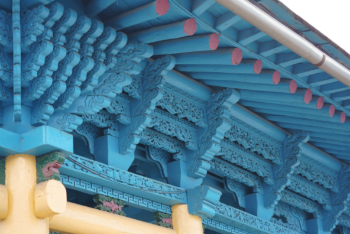
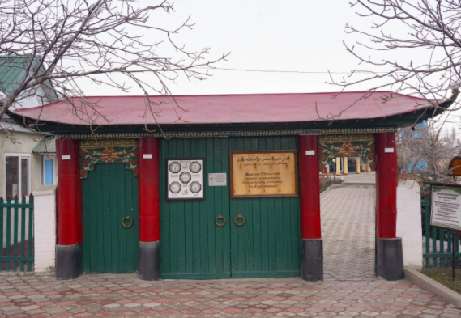
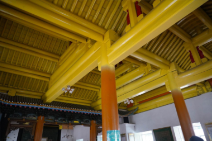
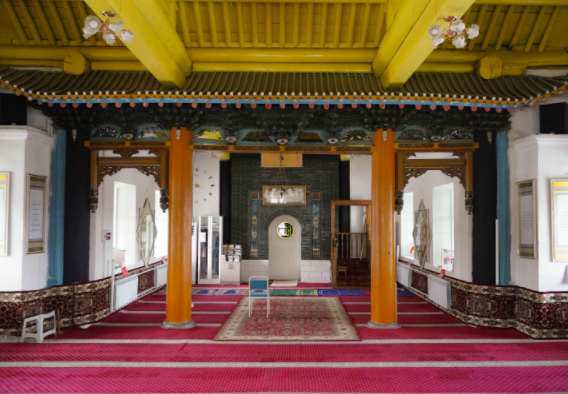

The Dungan Mosque in Karakol is one of Kyrgyzstan’s most unique buildings. It looks like a Chinese temple, but it functions as a mosque — and the most famous detail is that it was built from wood without metal nails. If you’re exploring Issyk-Kul or staying in Karakol, this is an easy, high-impact cultural stop.

What is the Dungan Mosque?
This mosque is tied to the Dungan community — a Muslim ethnic group with historical roots in China. The architecture reflects East Asian design: colorful eaves, carved wood, and a temple-like silhouette.
The structure is famous for its wooden joinery. Instead of nails, the building uses traditional fitting techniques, which is why it feels so “handcrafted” up close.

Look for the details
Carvings, colors, layered roof shapes — shoot close and you’ll get the best frames.

Walk around the courtyard
Quiet atmosphere, better angles, and a good place to slow down for a minute.

Wooden interior of Dungan Mosque
Perfect for a city route: cafés, markets, and cultural places in one half-day.

Inside Dungan Mosque
Soft light makes the colors look richer and the shadows cleaner.
Quick tips before you go
-
 Visit earlier in the day Fewer people, calmer vibe, and the light is better for photos.
Visit earlier in the day Fewer people, calmer vibe, and the light is better for photos. -
Dress respectfully It’s an active religious place — cover shoulders and avoid very short clothing.
-
Focus on details Roof edges, carvings, and colors look amazing in close-up shots.
-
 Add it to your Issyk-Kul route Easy to include if you’re staying in Karakol or doing a loop around the lake.
Add it to your Issyk-Kul route Easy to include if you’re staying in Karakol or doing a loop around the lake.